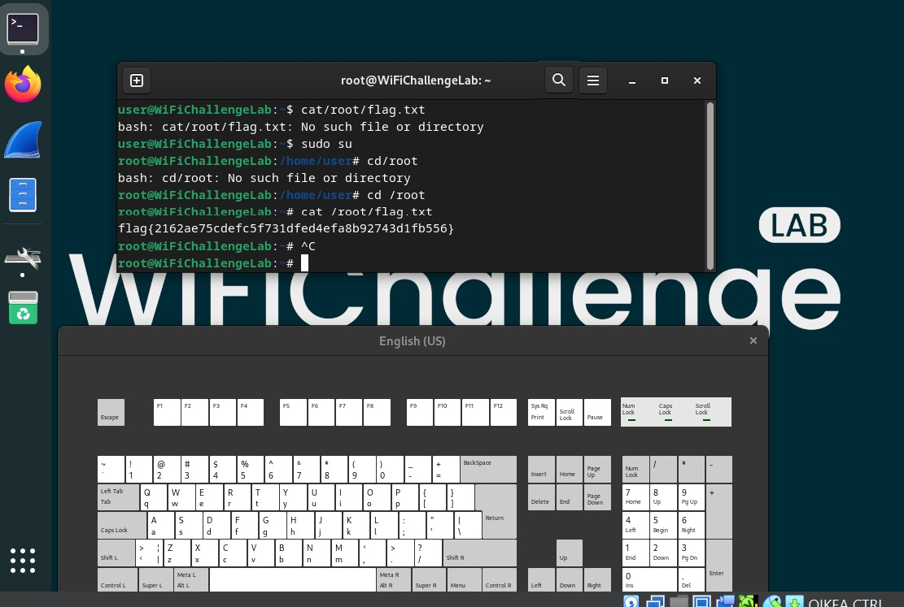

Tehtävä h6, Wifi challenge
Aloitin tehtävän lataamalla LISÄÄ KUVA harjoitukseen käytetyn virtuaalikoneen. Aloitin tekemällä lämmittely tehtävän. Tehtävät olivat rehellisesti sanoen haastavia, mutta sivuston walkthrough-osiota apuna käyttäen onnistuin tekemään tehtävistä muutaman. Seuraavat havainnot pistivät silmään ja josta opiskelin itse vielä lisää:
WLAN ja langattomien verkkojen turvattomuus yleisesti
Langaton internet on osa nykypäivää, mutta muodostaa samalla ison tietoturvaongelman. Verkon tarkkailu ja sen hakkeroiminen on huomattavasti helpompaa kuin silloin jos reitittimeen täytyy muodostaa fyysinen yhteys kaapelilla. Verkon urkintaan voi johtaa käyttäjän huolimattomuus/huijaaminen tai verkon teknisten ominaisuuksien heikkous.
Erilaisia tapoja hyökätä verkkoon
Ensimmäisenä mainittakoon "passiivinen verkkohyökkäys", joka tapahtuu esimerkiksi kuuntelemalla, kaappaamalla tai skannaamalla verkkolaitteita ja verkkopaketteja. Yksi tämmöinen esimerkki on "handshake"-tiedon kerääminen, eli WPA tiedon kerääminen. KERRO.
Näitä hyökkäyksiä voi olla vaikea löytää tai havaita, koska taitavasti tehtynä hyökkääjä ei oikeastaan jätä minkäänlaista jälkeä olemassa olostaan.
Toisena kategoriana voisi mainita "Aktiiviset hyökkäykset", joissa verkon toimintaan pyritään vaikuttamaan hyökkääjän toimesta. Esimerkiksi voisi nostaa "Rogue AP"-hyökkäyksen, jossa hyökkääjä perustaa luvattoman "access pointin" verkkoon huijaamaan käyttäjää. Tämä hyökkäys muistuttaa harjoituksissakin esiintynyttä "Evil Twin" hyökkäystä, jossa hyökkääjä luo identtiseltä vaikuttavan verkon huijaamaan käyttäjää. Kun tämä ottaa ko. verkkoon yhteyttä, valheellinen verkko voi esimerkiksi varastaa käyttäjätietoja.
Kolmantena hyökkäyskategoriana on sosiaaliseen mainpulointiin ja painostukseen perustuvat hyökkäykset, kuten yleisesti jaossa oleva verkon salasana taikka vilpilliset kirjautumissivut.
Mitä opin harjoituksissa
Harjoituksessa oli hurjaa huomata, että wlan signaali ei ole varsinaisesti yksityistä tietoa, vaan se näkyy hyvinkin kauas ja melkeinpä kenelle vain. Kiintoisaa on myös se, että laitteet hakeutuvat mielellään aina vahvimmalla signaalilla toimivaan verkkoon, mutta yleensä sen aitoutta ei tarkisteta.
Monet salausmenetelmät ovat myös täysin tai osittain murtuneita, kuten esimerkiksi WEP salaus joka on täysin ns. vapaata riistaa ja deprekoitunut. Harjoitus herätti myös kysymyksiä wpa2 salauksesta, jota monet wifi-verkot käyttävät salausprotokollanaan. Esimerkiksi vuodelta 2017 löytyy Elisan julkaisema tiedote jossa kerrotaan wpa2-salauksesta löytyneestä haavoittuvuudesta. Tämä hyökkäys tapahtuu juurikin valetukiaseman käytön kautta, jolloin verkkoliikenteen salausavaimet voivat päätyä hyökkääjän käsiin joka taas voi johtaa verkkoliikenteen salauksen purkuun.
Nosto yhdestä tehtävästä
Mielestäni mielenkiintoisin tehtävä oli ihan alkupäässä esiintynyt MAC osoitteen urkinta, koska se menee hyvin läheltä aiemman tehtävän videon aihetta josta tein raportin. Tehtävässä 02. What is the MAC of the wifi-IT client?, käytetään näitä komentoja:
sudo airodump-ng wlan0mon -w ~/wifi/scan --manufacturer --wps --band abg
sudo airodump-ng wlan0mon -w ~/wifi/scanc11 --manufacturer --wps -c11
Tässä yritetään ensin skannata sekä 2.4ghz ja 5.0 ghz wlan-kanavia. Tämä näkyy komennossa "abg" päätteenä. Wlan0mon-tarkoittaa wifi-adapteria joka on asetettu kuuntelutilaan. Toisessa komennossa sitten kuunnellaan jo löydettyä kanavaa.
Kiinnostavaa tässä tehtävässä on se, että komennot palauttavat myös access pointin MAC osoitteen, eli bssid:n. Eli on mahdollista nähdä kenen valmistajan wifi-reitittimeen käyttäjä on yhteydessä. Näitä valmistajia on esimerkiksi Cisco ja Huawei.
Lähde
Elisa: https://www.elisasantamonica.fi/ajankohtaista/uutiset/621-haavoittuvuudet-wpa2-protokollassa-mahdollistavat-wifi-verkkojen-salauksen-murtamisen